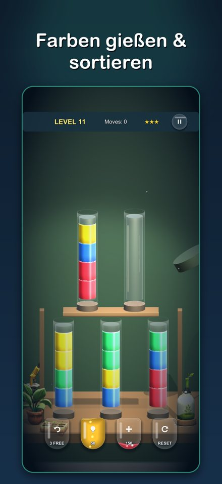
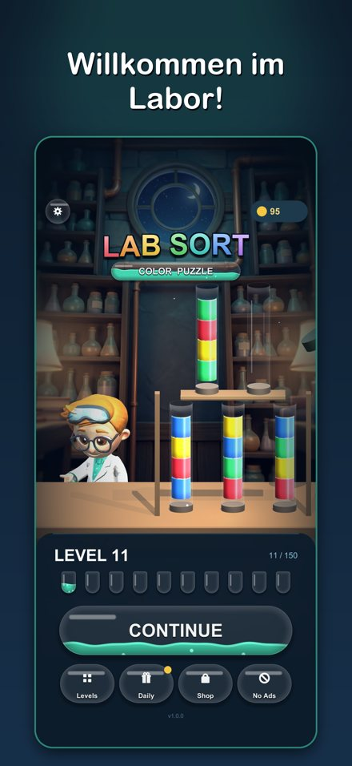

Lab Sort:
Farb-Rätsel
Gieße bunte Flüssigkeiten zwischen Glasröhrchen hin und her, bis jedes Röhrchen nur eine Farbe enthält. 250 handgemachte Level in 8 leuchtenden Laboren — kein Timer, kein Druck.
Im App Store laden
